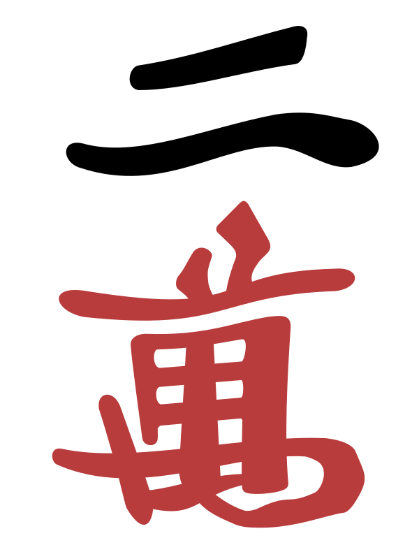
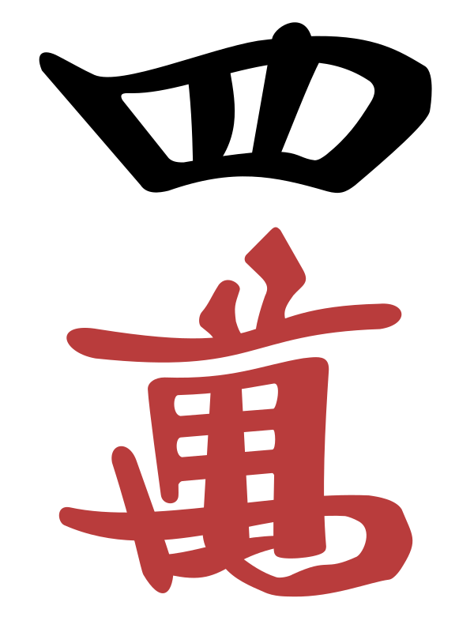
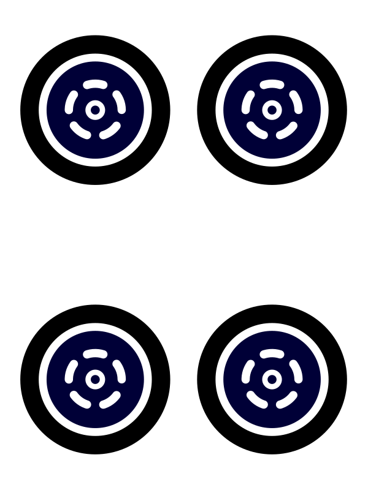
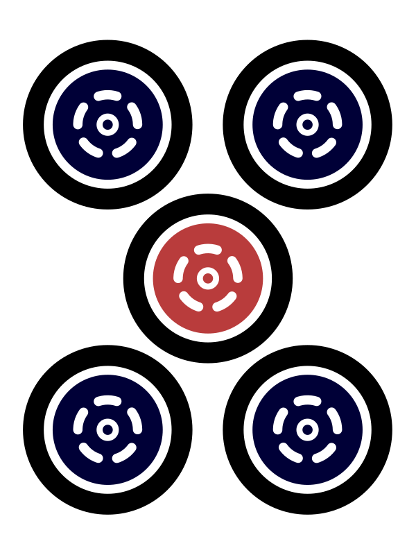
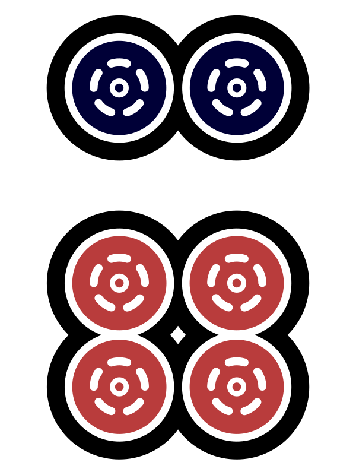
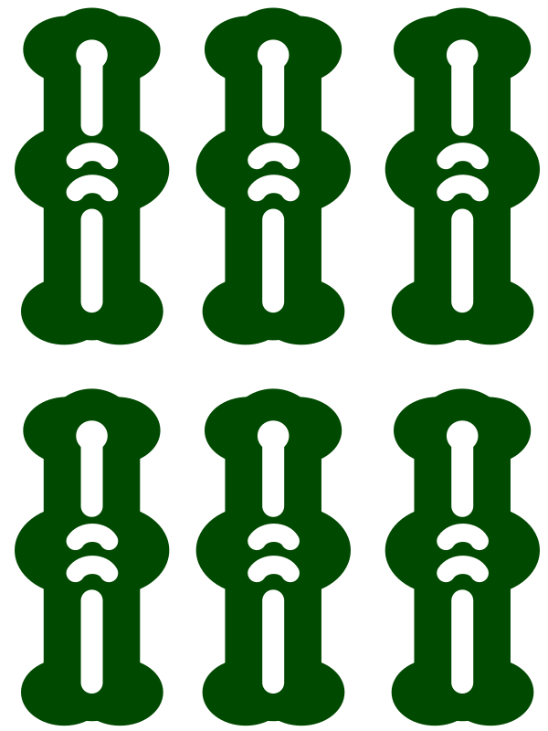
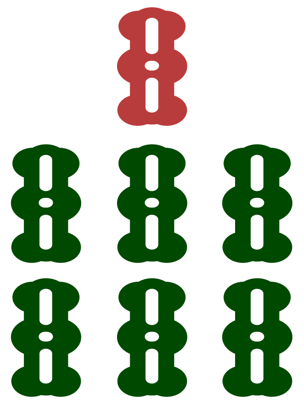
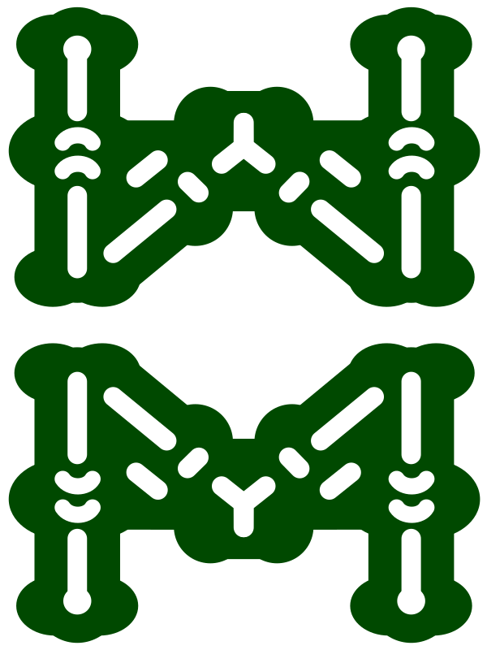
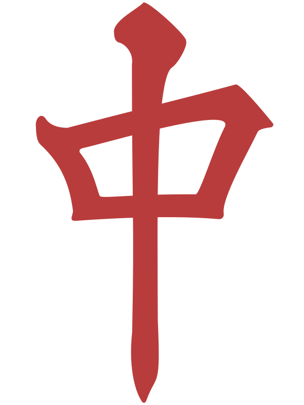
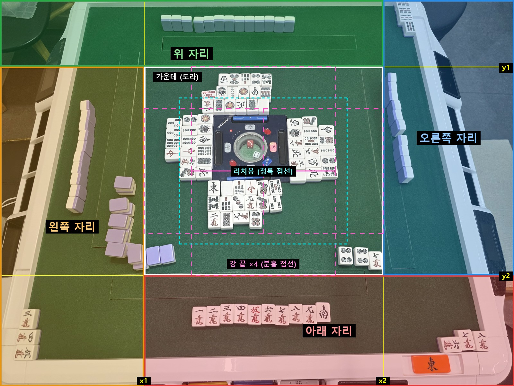

문제
한 장만 틀려도 점수가 틀립니다
오프라인 대국에서는 판·부 계산과 점수 기록을 사람이 합니다. 손패 사진을 읽는 앱은 이미 많지만, 조사한 범위에서 탁자 전체를 읽어 기록까지 잇는 상용 제품은 없었습니다. 점수가 맞으려면 손패 13~14장, 울기, 도라 표시패, 방총자, 리치 여부가 모두 맞아야 합니다.

태블릿 결과 화면. 역과 판·부, 등급, 점수를 한 화면에 보여 줍니다. 패 그림은 CC0 세트입니다.
탁자 위 고정 카메라가 손패·울기·도라·방총자·리치를 읽고, 기기 안 엔진이 점수를 계산해 대국 기록에 넣는 Android 앱입니다.









오프라인 대국에서는 판·부 계산과 점수 기록을 사람이 합니다. 손패 사진을 읽는 앱은 이미 많지만, 조사한 범위에서 탁자 전체를 읽어 기록까지 잇는 상용 제품은 없었습니다. 점수가 맞으려면 손패 13~14장, 울기, 도라 표시패, 방총자, 리치 여부가 모두 맞아야 합니다.
태블릿 결과 화면. 역과 판·부, 등급, 점수를 한 화면에 보여 줍니다. 패 그림은 CC0 세트입니다.
판독과 계산을 나눠, 점수 규칙은 언제나 검증 가능한 코드가 맡습니다.

구역 나누기 예시. 네 자리와 가운데, 강 끝, 리치봉을 따로 봅니다. (평가 사진 D, 연출 장면)
외부 AI(Gemini) 판독을 자체 모델로 바꿔 Gemini 호출 없이 화료를 읽습니다.
직접 입력 계산기에서 시작해 대국 한 판 전체를 관리하는 앱이 되었습니다.
2026년. 앱 Flutter/Dart · 서버 Python FastAPI · 판독 YOLO26 · 배포 GitHub Actions, AWS EC2 t4g.small(CPU)
숫자를 그대로 믿으면 안 되는 부분도 함께 기록합니다.